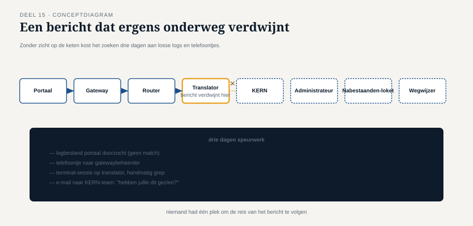
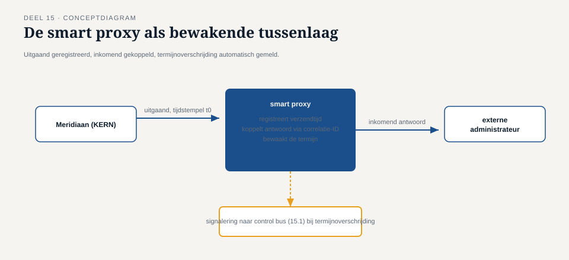

Deel 15 — Systeembeheerpatronen: control bus, wire tap, detour, message history, smart proxy
Reader · Ductus-cursus Enterprise Integration Patterns · niveau 2 (professional) · deel 15 van 22
15.0 Het incident dat drie dagen kostte om te lokaliseren
Acht systemen, een broker, een event backbone, drie soorten endpoints — het landschap uit deel 11 tot en met 14 stond, en werkte. Tot een salariscorrectie van een grote werkgever spoorloos leek: de werkgever had een bevestiging gekregen (deel 3), de deelnemer had na drie weken nog niets op zijn rekening gezien, en niemand bij Meridiaan kon vertellen wáár in de keten — KERN, de recipient list, de content enricher naar het personeelssysteem, of ergens anders — het bericht was blijven steken.
Het kostte Caspars team drie dagen om het antwoord te vinden: het bericht had de content enricher (deel 13) bereikt, was daar door een tijdelijke fout in de fallback-logica in een lus terechtgekomen die het steeds opnieuw probeerde zonder ooit het dead letter channel te bereiken, en had zo, onzichtbaar, drie weken lang "gewerkt" zonder ooit te voltooien. Elke individuele component werkte naar behoren volgens zijn eigen logica. Niemand had een overzicht dat over de hele keten heen liep.
Dit is een ander probleem dan niveau 1 behandelde. Deel 9 loste op wat er gebeurt als een bericht definitief mislukt. Dit incident liet zien dat er ook een categorie tussenin bestaat: berichten die niet mislukken, niet slagen, en gewoon onzichtbaar ergens ronddraaien — en dat drie dagen zoeken door acht systemen, zonder gecentraliseerd overzicht, geen houdbare manier is om dat te vinden.

Dit deel — het eerste tweedagdelen-deel van de cursus, zoals de familieopzet voorschrijft voor onderwerpen die dat zwaartepunt vragen — behandelt vijf patronen die samen dit soort situaties voorkomen: de control bus, de wire tap, de detour, de message history, en de smart proxy.
DAGDEEL A
15.1 De control bus
Een control bus is een apart, van het reguliere berichtenverkeer gescheiden kanaal dat uitsluitend bestuurlijke en operationele signalen draagt: statusopvragingen aan componenten, commando's om een component tijdelijk te pauzeren, configuratiewijzigingen, en gezondheidscontroles. Het onderscheidende principe is dat dit verkeer nooit over dezelfde kanalen loopt als de mutatieberichten zelf.
Waarom dit ertoe doet, wordt duidelijk bij het incident van 15.0: als Caspars team op het moment van het incident een manier had gehad om aan elke component in de keten te vragen "wat verwerk je op dit moment, en hoe lang al", zonder daarvoor het reguliere mutatieverkeer te moeten doorzoeken, was het incident in uren gevonden in plaats van dagen. Een control bus maakt dat mogelijk door bestuurlijke vragen als eersteklas berichten te behandelen, met hun eigen kanaal, los van de operationele last van het productieverkeer.
Een tweede reden voor scheiding is betrouwbaarheid onder druk: als het reguliere mutatiekanaal overbelast is (precies het scenario waarin je het meest behoefte hebt aan bestuurlijk overzicht), zou een controlesignaal dat over hetzelfde kanaal moet, evenzeer vertraagd worden — op het moment dat je het hardst nodig hebt, is het dan het minst beschikbaar. Door de control bus fysiek of logisch te scheiden, blijft bestuurlijke communicatie ook werkzaam wanneer het reguliere verkeer vastloopt.
Kernzin 15 van de cursus: bestuurlijk verkeer over hetzelfde kanaal als operationeel verkeer laten lopen, betekent dat je stuurinstrument precies dan uitvalt wanneer je het het hardst nodig hebt.
Bij Meridiaan is, ná het incident, een control bus ingericht waarmee elk endpoint (deel 14) periodiek een minimale statusmelding aflevert ("laatst actief bericht-ID, tijdstip, aantal in verwerking"), en waarmee het integratieteam op aanvraag een directe statusopvraging aan elk component kan sturen — zonder ooit het reguliere mutatiekanaal te hoeven raadplegen.
15.2 De wire tap
Een wire tap is een niet-invasief afluisterpunt op een bestaand kanaal: een kopie van elk bericht dat langskomt, wordt afgetakt naar een apart observatiekanaal, zonder de oorspronkelijke berichtstroom op enige manier te beïnvloeden — geen vertraging, geen wijziging, geen risico dat de tap zelf een storing in de hoofdstroom veroorzaakt.
Het onderscheid met een gewone publish-subscribe-abonnee (deel 6) is er een van bedoeling en garantie: een reguliere abonnee is een functionele deelnemer aan de keten (het Nabestaandenloket doet iets met een mutatie-event), terwijl een wire tap uitdrukkelijk geen functionele rol heeft — hij observeert alleen, en zijn eventuele falen (de observatiekant is overbelast, of tijdelijk onbereikbaar) mag onder geen beding de hoofdstroom raken. Dit vraagt een expliciete ontwerpeis: de tap-mechaniek moet "fire and forget" zijn richting het observatiekanaal, zonder enige vorm van bevestiging die de hoofdverwerking zou kunnen blokkeren.
Bij Meridiaan is, na het incident, een wire tap geplaatst op elk kanaal in de mutatieketen, die elk doorgaand bericht (met alleen de header-velden, niet de volledige payload — een bewuste toepassing van de content filter uit deel 13, om gevoelige gegevens niet onnodig te dupliceren naar een observatiekanaal) naar een centraal traceersysteem stuurt. Dit is precies het instrument dat het incident van drie dagen tot een kwestie van minuten had kunnen maken: één bericht-ID opzoeken, en zien op welk kanaal het voor het laatst is gezien, en wanneer.

15.3 De detour
Een detour stuurt een bericht, onder een specifieke, tijdelijke voorwaarde, via een omweg langs een extra verwerkingsstap, voordat het zijn normale pad vervolgt — bijvoorbeeld voor extra validatie, tijdelijke monitoring van een verdachte berichtsoort, of een geplande interventie tijdens een storing.
Het verschil met een content-based router (deel 4) is dat een detour tijdelijk en uitzonderlijk is, terwijl een router een permanent onderdeel van het normale ontwerp is. Bij Meridiaan is een detour ingezet direct na het incident van 15.0: gedurende de onderzoeksperiode werden alle berichten die de content enricher naar het personeelssysteem passeerden, via een detour omgeleid langs een extra logcomponent die elke retry-poging expliciet vastlegde — een tijdelijke maatregel, uitdrukkelijk niet bedoeld om permanent te blijven bestaan, om de oorzaak van de eindeloze retry-lus te kunnen reconstrueren.
Een detour die vergeten wordt af te breken, wordt in de praktijk zelf een bron van complexiteit — een permanente omweg die niemand meer als tijdelijk herkent, en die op den duur net zo goed als een vergeten, ongedocumenteerde router functioneert. De discipline hier is expliciet: elke detour krijgt bij Meridiaan een vervaldatum in de configuratie, en een verantwoordelijke die actief moet beslissen: verwijderen, of formaliseren tot een permanent onderdeel van de keten (in welk geval het feitelijk een nieuwe, bewust ontworpen router of filter wordt, niet langer een detour).
Vuistregel: een detour die langer dan een vooraf afgesproken termijn blijft bestaan, is geen detour meer — het is een niet-erkende, permanente wijziging van de keten, en verdient dezelfde zorgvuldigheid als elk ander permanent ontwerp.
DAGDEEL B
15.4 De message history
Een message history is een header-veld dat, terwijl een bericht door de keten reist, een cumulatief spoor bijhoudt van elke component die het heeft aangeraakt — niet de volledige inhoud van elke stap, maar een compacte lijst van "wie, wanneer" die groeit naarmate het bericht verder door de keten beweegt.
Het onderscheid met een wire tap is er een van perspectief: een wire tap observeert van buitenaf, op een specifiek kanaal, en vergt een centraal systeem om de losse waarnemingen samen te voegen tot een verhaal. Een message history reist mee met het bericht zelf en vertelt zijn eigen verhaal, zonder dat een apart traceersysteem de puzzelstukken hoeft samen te voegen — op elk moment dat je het bericht in handen hebt (bijvoorbeeld in het dead letter channel, deel 9), kun je direct zien welke weg het al heeft afgelegd, zonder een aparte raadpleging.
Bij Meridiaan zijn beide patronen complementair ingezet: de wire tap geeft het centrale team een landschapsbreed overzicht (waar zijn berichten in het algemeen, welke kanalen zijn druk), terwijl de message history elk individueel bericht zelfvoorzienend maakt in het beantwoorden van de vraag "wat is er met mij gebeurd" — cruciaal juist in het dead letter channel, waar een mens het bericht handmatig gaat onderzoeken en niet wil moeten wachten op een aparte raadpleging van een extern traceersysteem om te weten waar te beginnen.
Een praktische grens: een message history mag niet onbeperkt groeien. Bij een lange keten met veel stops (zoals bij een detour die extra stappen toevoegt, 15.3) kan het header-veld zelf een aanzienlijke omvang bereiken. Bij Meridiaan is een maximum van twintig vermelde stops afgesproken, met een expliciete markering ("geschiedenis afgekapt") zodra die grens wordt bereikt — een bewuste keuze om de bruikbaarheid van de laatste, meest recente stappen te bewaren boven volledigheid van de vroegste stappen, die doorgaans minder relevant zijn voor het diagnosticeren van een actueel probleem.
15.5 De smart proxy
Een smart proxy combineert kenmerken van de wire tap en de service activator (deel 14): hij plaatst zich tussen zender en ontvanger, registreert het bericht (zoals een wire tap) maar houdt daarnaast, in tegenstelling tot een pure wire tap, actief de relatie bij tussen het oorspronkelijke bericht en het uiteindelijke antwoord — waardoor hij, anders dan een wire tap, wél in de hoofdstroom zit en dus zorgvuldiger moet worden ontworpen om geen vertraging of storing te introduceren.
Het motiverende scenario bij Meridiaan is de externe pensioenadministrateur-koppeling: berichten die naar de administrateur gaan, passeren een smart proxy die (a) een kopie van het uitgaande bericht registreert met tijdstempel, (b) wanneer het antwoord terugkomt, dat antwoord aan de oorspronkelijke aanvraag koppelt via de correlatie-ID (deel 2-3), en (c) automatisch signaleert wanneer een uitgaand bericht na een ingestelde termijn nog geen antwoord heeft gekregen — zonder dat de aanvrager zelf hoeft te pollen of te wachten (in lijn met het non-blocking-principe uit deel 3).
Het verschil met een gewone request-reply-implementatie (deel 3) is dat de smart proxy dit generiek, voor elke koppeling met de externe administrateur, op één centrale plek doet, in plaats van dat elke individuele aanvrager zijn eigen tijdslimiet- en signaleringslogica moet bouwen — een herbruikbare, gedeelde voorziening die het "is dit onderweg blijven hangen?"-vraagstuk (precies het incident van 15.0) generiek oplost voor alle koppelingen met die specifieke, historisch onbetrouwbare externe partij, zonder elke aanvrager afzonderlijk te belasten met die verantwoordelijkheid.
Kernzin 16 van de cursus: een smart proxy is waardevol precies daar waar meerdere aanvragers hetzelfde bewakings- en koppelingsprobleem zouden moeten oplossen — centraliseer het probleem op de plek waar het structureel voorkomt, niet bij elke individuele aanvrager apart.

15.6 Vijf patronen, één samenhangend antwoord op het incident van 15.0
Terug naar het incident waarmee dit deel opende. Met alle vijf patronen op hun plaats, zou hetzelfde incident zich anders hebben ontvouwen:
De wire tap op elk kanaal had onmiddellijk getoond op welk kanaal het bericht voor het laatst was gezien. De message history op het bericht zelf had, zodra het gevonden was, in één oogopslag getoond welke stappen het al had doorlopen. De control bus had het mogelijk gemaakt direct aan de content enricher te vragen "wat verwerk je op dit moment", zonder de logs van acht systemen te moeten doorzoeken. De smart proxy, was deze specifieke koppeling er een naar een externe partij geweest, had automatisch gesignaleerd dat er geen tijdig antwoord was gekomen. En de detour, ingezet tijdens het onderzoek, had de precieze oorzaak van de retry-lus vastgelegd voor toekomstige diagnose, zonder de permanente keten te hoeven aanpassen.
Geen van deze vijf patronen lost het incident zelf op — dat bleef een bug in de fallback-logica van deel 13, die alsnog gecorrigeerd moest worden. Wat ze wel oplossen, is de tijd tussen "er is iets mis" en "we weten precies wat en waar" — van drie dagen naar, naar schatting bij Meridiaan achteraf berekend, minder dan een uur.
Samenvatting van deel 15
- Een control bus scheidt bestuurlijk verkeer strikt van operationeel verkeer, zodat sturing werkzaam blijft ook wanneer het reguliere verkeer overbelast is.
- Een wire tap tapt niet-invasief een kopie van elk bericht af naar een centraal observatiekanaal, zonder de hoofdstroom te beïnvloeden — anders dan een reguliere publish-subscribe-abonnee, die wél een functionele rol heeft.
- Een detour is een tijdelijke, uitzonderlijke omweg met een expliciete vervaldatum — een detour die vergeten wordt af te breken, wordt een niet-erkende permanente wijziging.
- Een message history reist mee met het bericht en maakt het zelfvoorzienend in het vertellen van zijn eigen verwerkingsgeschiedenis, met een praktische grens aan hoeveel stops worden bewaard.
- Een smart proxy centraliseert bewaking en correlatie voor koppelingen waar meerdere aanvragers hetzelfde probleem zouden moeten oplossen, met name bij historisch onbetrouwbare externe partijen.
- Samen verkorten deze vijf patronen niet het onderliggende probleem, maar wel de tijd tussen signaal en diagnose — precies de zichtbaarheidsles die deel 9 al op berichtniveau introduceerde, nu toegepast op landschapsniveau.
Vooruitblik
Deel 16 verlaat de systeembeheerpatronen en behandelt de messaging-infrastructuur zelf: broker-architecturen en exchange/queue-modellen, toolneutraal beschreven — de technische onderbouw waarop alle voorgaande patronen, van kanaal tot smart proxy, uiteindelijk draaien.